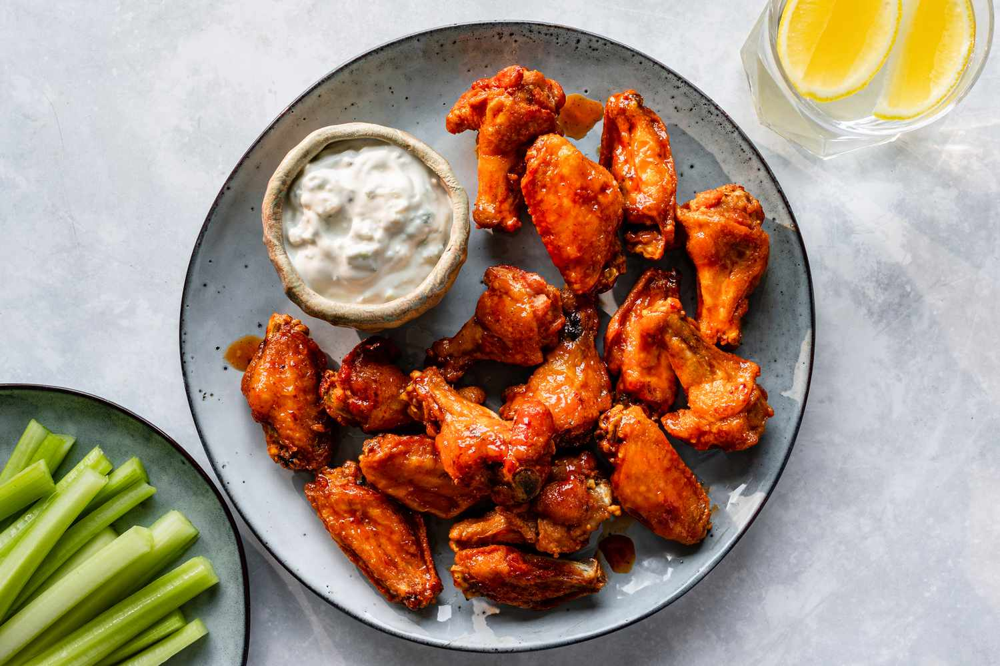

Home
Air Fryer Chicken Wings

These air fryer chicken wings will quickly become a staple in your game day appetizer rotation. Your trusty air fryer is the key to perfectly crispy and flavorful (but never oily) chicken wings.
INGREDIENTS
- 5 pounds chicken wings
- 2 tablespoons olive oil
- 1 ⅓ cups cayenne pepper sauce
- 1 cup butter
- 4 tablespoons vinegar
- 2 teaspoons garlic powder
- ½ teaspoon cayenne pepper
DIRECTIONS
- Gather all ingredients. Preheat an air fryer to 360 degrees F (180 degrees C).
- Place wings in a large bowl; drizzle oil over wings and massage until chicken is evenly coated.
- Arrange 1/2 of the wings in a single layer in the air fryer basket.Arrange 1/2 of the wings in a single layer in the air fryer basket.
- Cook in the preheated air fryer for 25 minutes. Use tongs to flip wings and cook until golden brown and crisp on the outside, 5 minutes more. Transfer cooked wings to a large bowl; cover to keep warm. Repeat with remaining wings.
- While the second batch is cooking, combine hot pepper sauce, butter, vinegar, garlic powder, and cayenne pepper in a small saucepan over medium heat. Stir and keep warm until wings are cooked
- Pour sauce over cooked wings and toss to coat.